Full-stack product · Vue 3 · Spring Boot · PostgreSQL
A full-stack point-of-sale system built from scratch for Kosovo cafes — multi-device, multi-staff, and production-ready.
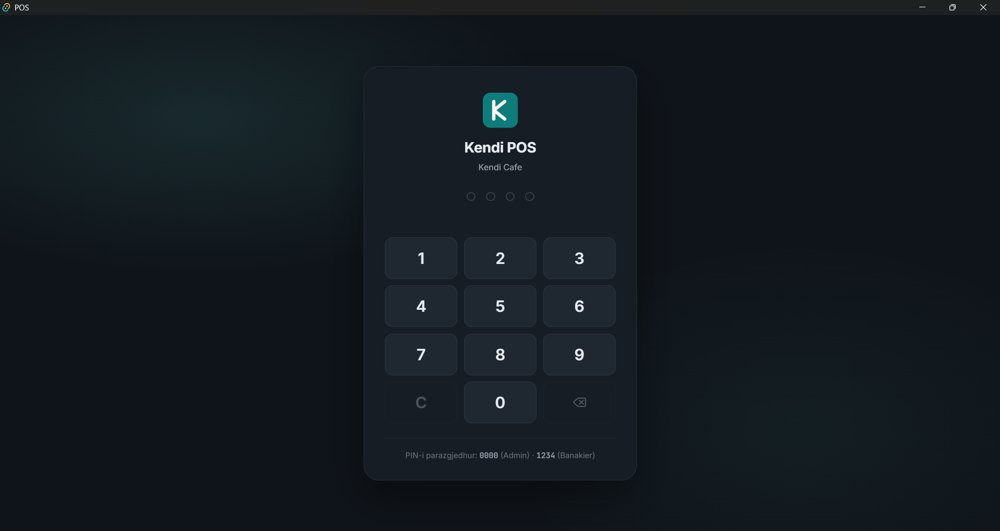
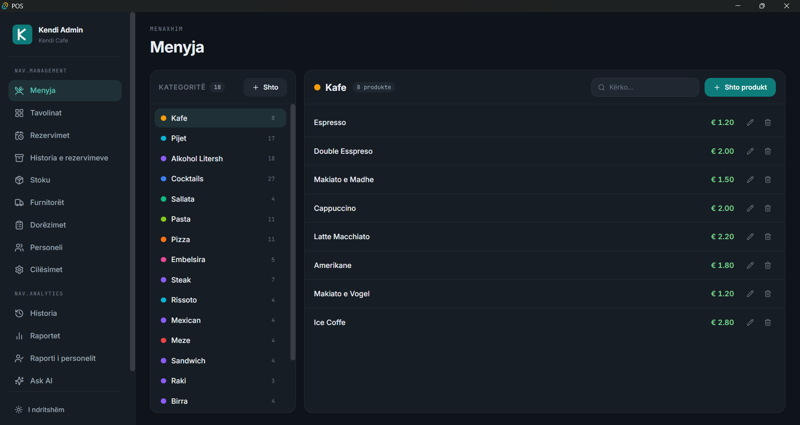
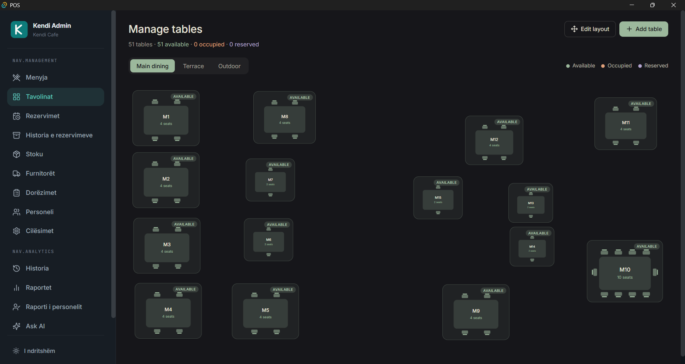
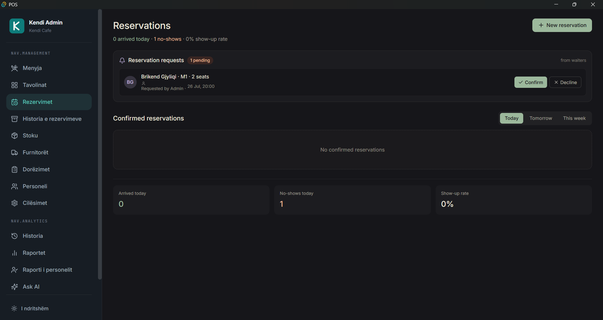

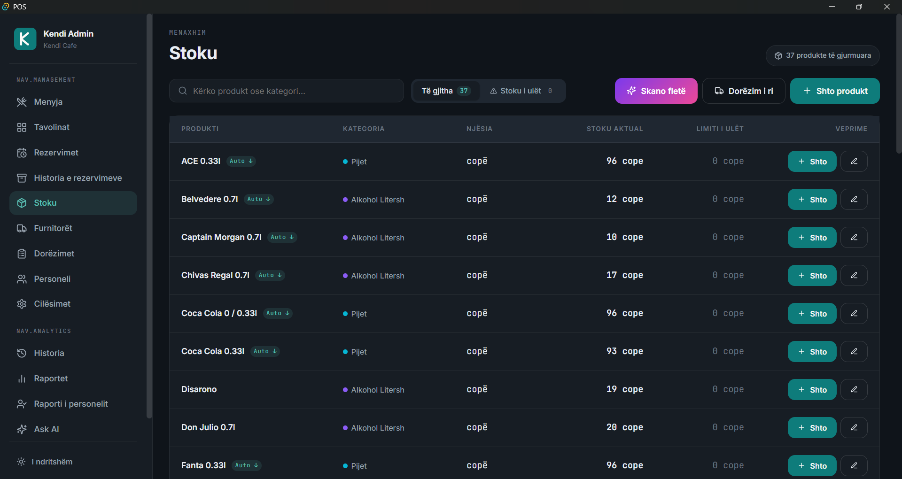
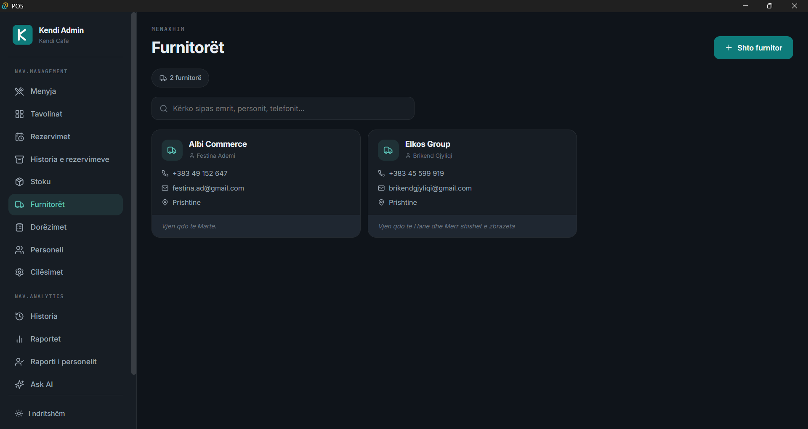
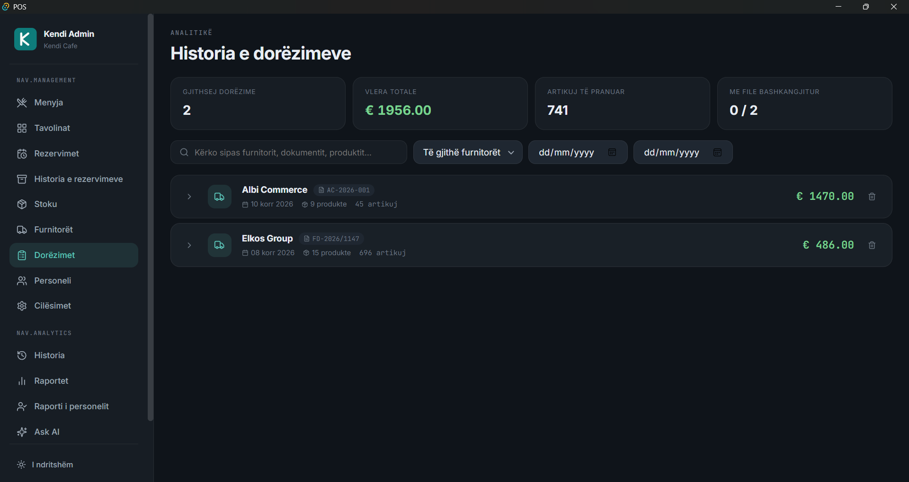
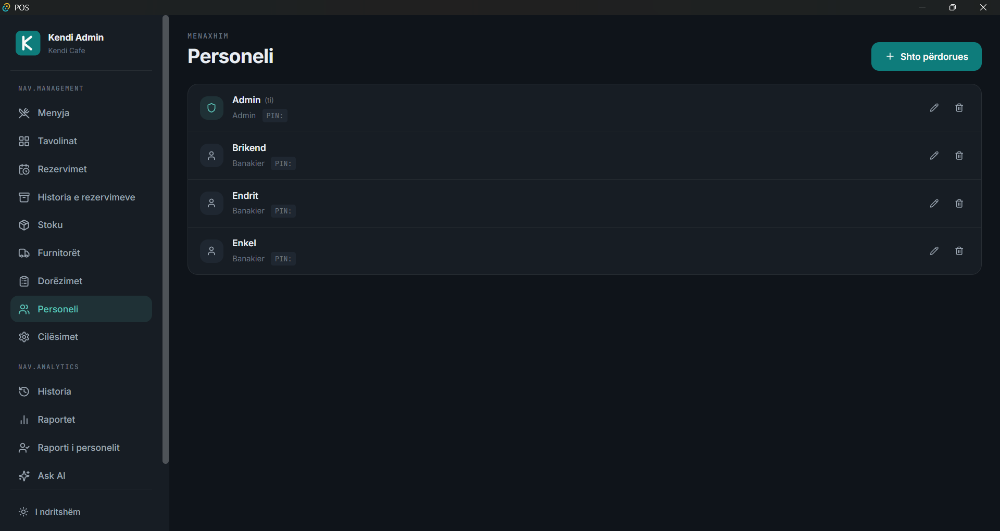
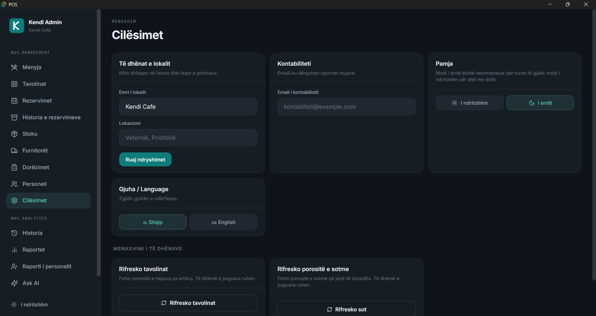
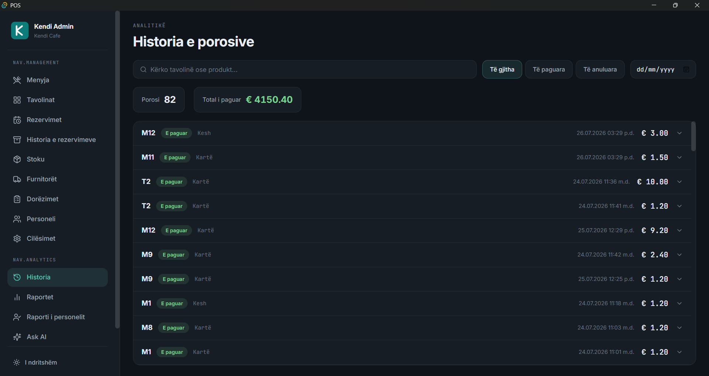
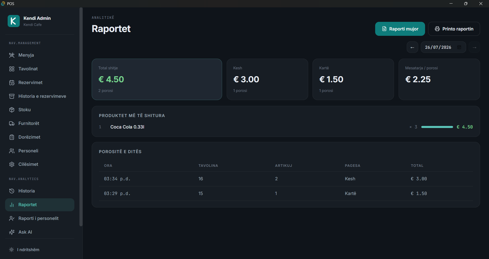
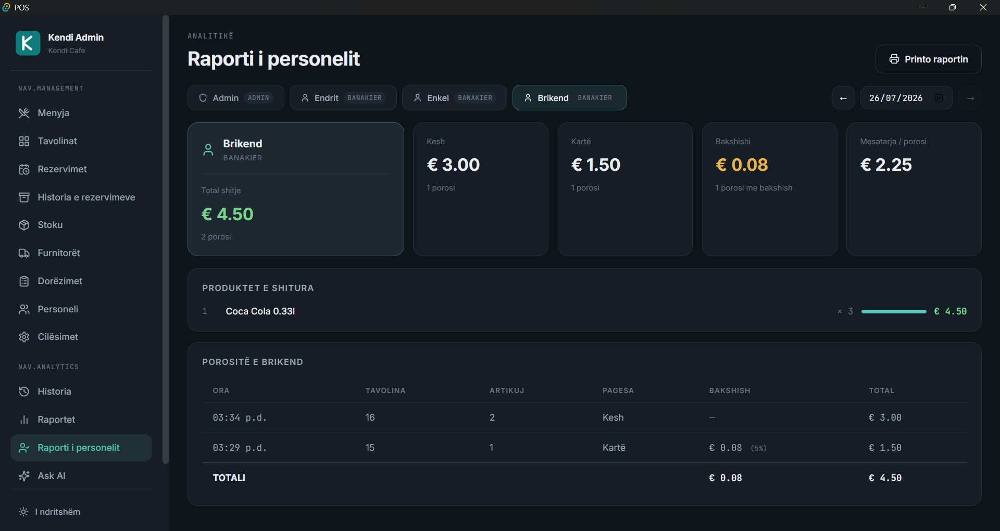
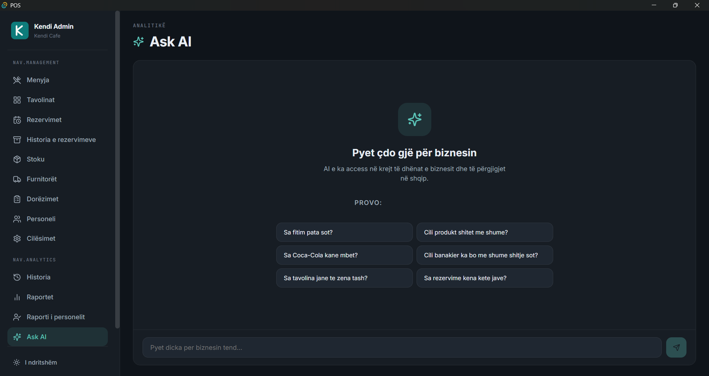
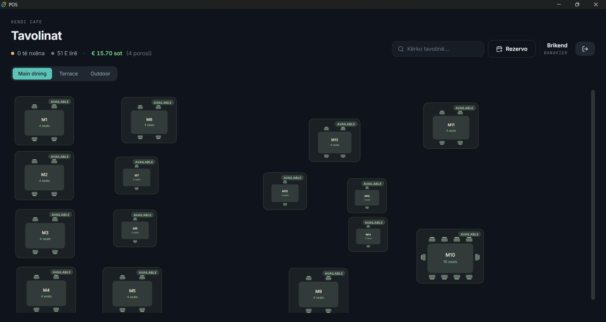
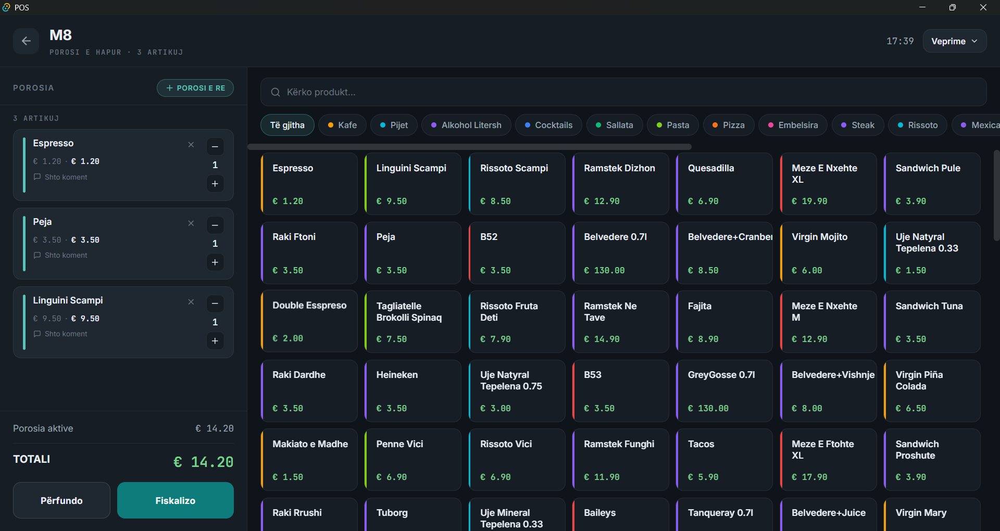
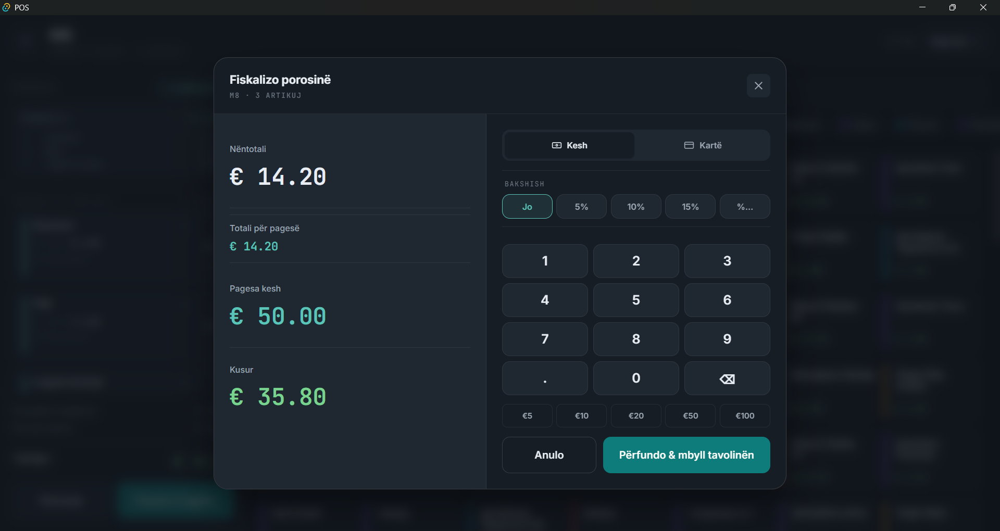
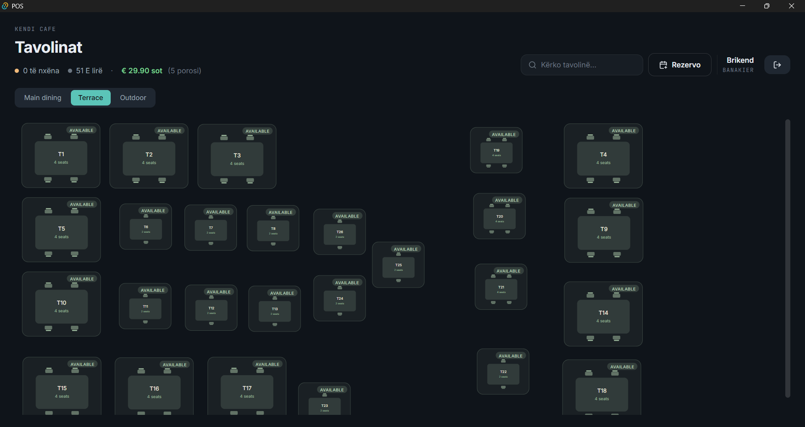
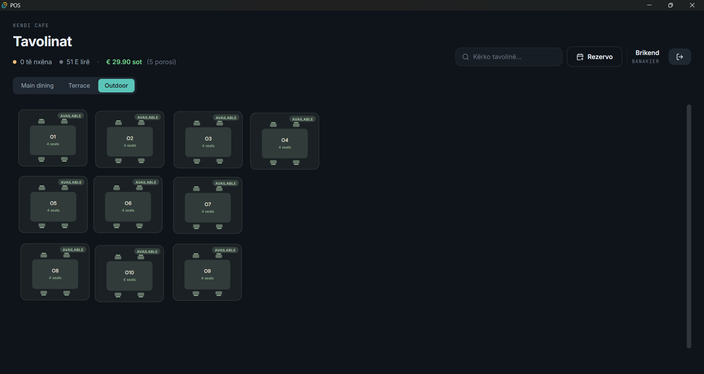
In short
Most cafes in Kosovo still run on pen and paper. Kendi POS replaces that with a real full-stack system — a Vue 3 frontend talking to a Spring Boot API backed by PostgreSQL, deployable on any local network.
Built for a real cafe in Prishtinë, it covers the full order lifecycle: PIN login, live multi-device table view, multi-order tables with split payment, fiscal receipts with a change calculator, daily Z-Reports, and an admin panel where the owner manages menu, staff and tables without touching code. Bilingual (Albanian / English), with all money stored as integer cents.
Next up: WebSocket realtime sync, thermal receipt printing, ATK fiscalization, and multi-tenant SaaS — the architecture was designed for it from day one.
Highlights
Product
Multi-device, multi-staff
Every device sees the same live state. Tables opened by another waiter lock automatically — no double-orders during a rush.
Product
Fiscal flow & Z-Reports
Cash or card with change calculator, split payments per table, and daily Z-Reports with per-staff analytics — printable from the browser.
Engineering
Spring Boot + PostgreSQL
30+ REST endpoints, BCrypt-hashed PINs, atomic order transactions, and a Dockerised database that survives anything the cafe throws at it.
Engineering
Hard problems solved
JPA serialisation loops, Vue reactive proxies vs storage, UUIDs on plain-HTTP LANs, and cross-device table sync — all shipped, all documented in the repos.
Want to see a live demo?
I can walk you through the full order flow in under five minutes — table selection, multi-order, fiscal receipt, admin panel, Z-Report. Get in touch.